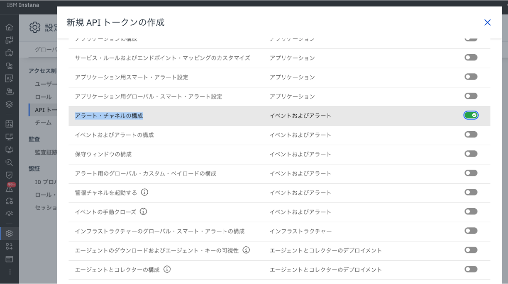
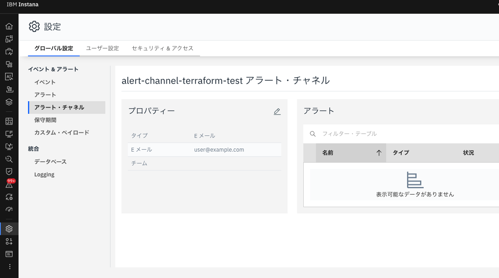
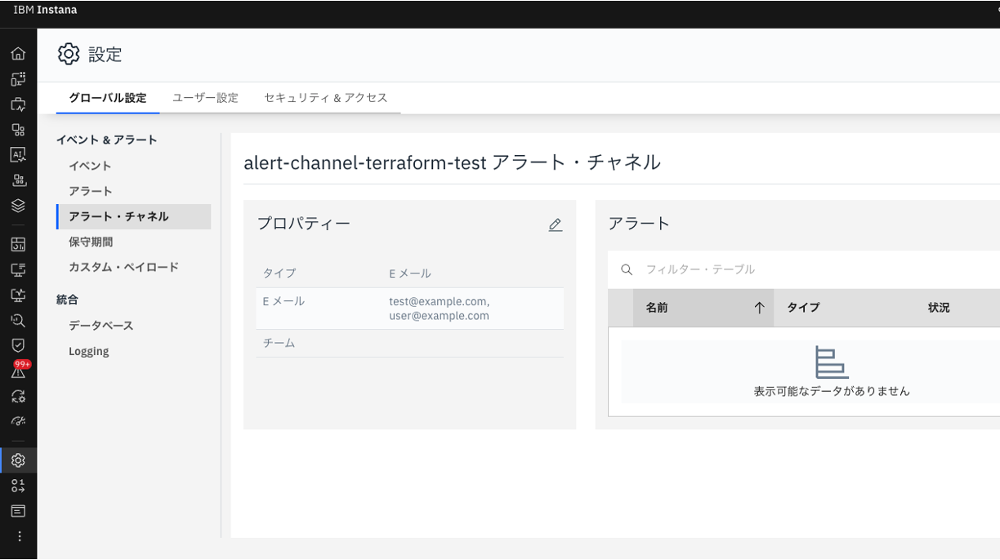

Terraformを用いたIaC化
概要とメリット
- Instana を日々運用していると、メンバーの追加や権限設定、各種アラート、ダッシュボードの作成・改修など、設定項目はあっという間に増えます。規模が大きくなるほど管理は複雑化し、手作業による変更や削除には時間がかかるだけでなく、環境ごとの差分や抜け漏れ、レビューのしづらさといった課題も生まれがちです。
-
この課題に対して有効なのが IaC（Infrastructure as Code） です。Instana は設定をコードとして管理できるため、宣言的に「あるべき状態」を記述し、再現性の高い運用に置き換えることができます。コード化することで、次のようなメリットが期待できます。
- 標準化：本番・ステージングなど複数環境で設定の一致を担保
- 変更の見える化：差分が明確になり、レビューや承認フローと親和性が高い
- 切り戻しの迅速化：問題発生時も以前の状態へ容易に戻せる
- ガバナンスの強化：Pull Request ベースでチーム開発・監査が可能
- 自動化：設定の追加・更新を自動化し、運用コストを抑制
-
本記事では、これらの考え方を Terraform を用いて具体化する例として、アラートチャネルのIaC化についてご紹介します。「人が頑張って同じ操作を繰り返す」から「コードで確実に同じ状態を作る」へ。Instana 運用の生産性と信頼性を、Terraform で一段引き上げていきましょう。
公式ドキュメントリンク
- https://www.ibm.com/docs/ja/instana-observability/latest?topic=apis-instana-terraform-provider
- https://registry.terraform.io/providers/instana/instana/latest/docs
設定例
設定の前提条件
- Terraformを用いて、InstanaのアラートチャネルをIaC化します
- クライアントより
terraformコマンドを実行可能である必要があります
| 設定項目 | 設定内容 |
|---|---|
| アラートチャネル | Eメール |
| 登録するメールアドレス | user@example.com |
| TerraformにおけるInstanaプロバイダーバージョン | 5.3.1 |
アラートチャネルの新規作成
- Instana UIより、アラート・チャネルの構成のAPIトークンを作成します

main.tfを作成します
terraform planを実行し、アラートチャネルの作成が追加されることを確認します。
terraform applyを実行することで、user@example.com宛にアラート情報を送信するアラートチャネルが作成されます。
- Instana UIでもアラートチャネルが作成されていることを確認できます

既存のアラートチャネルへの変更
- 先ほど作成したアラートチャネルに対して、
test@example.comというユーザーを追加したい場合、main.tfのinstana_alerting_channelのリソースブロックを変更し、再度terraform plan/applyを実行します
- Instana UIでも
test@example.comが追加されていることを確認できます
